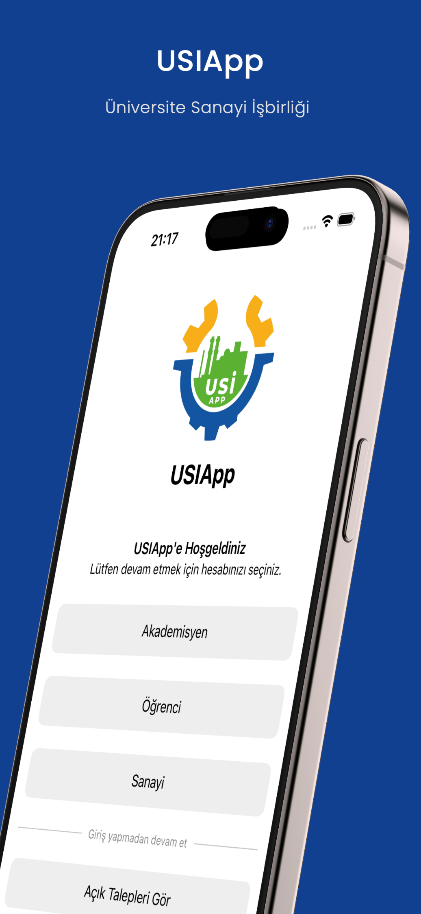
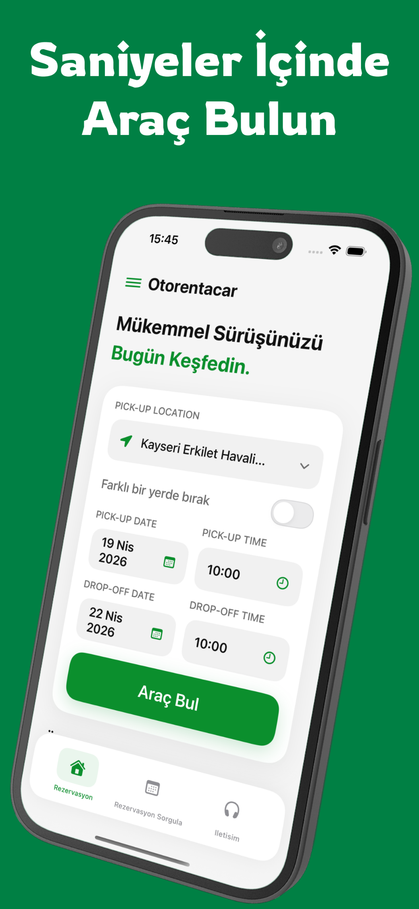

Android geliştirme
Kullanıcı akışları, API entegrasyonları ve mobil arayüzler. Kotlin ile fikirleri çalışan uygulamalara dönüştürme.
EDA DURSUN / ANDROID & WEB DEVELOPER
Merhaba, ben Eda. Kullanışlı Android uygulamaları ve modern web deneyimleri geliştiriyorum. Bir fikrin, insanların kullanabildiği bir ürüne dönüşmesini seviyorum.


01 / SEÇİLİ ÇALIŞMALAR
Mobil uygulamalardan web arayüzlerine; üzerinde çalıştığım ürünler ve arkasındaki geliştirme süreci.
02 / YETKİNLİKLER
Kullanıcı deneyiminden veri katmanına,
ürünün her parçasını anlamaya çalışıyorum.
Kullanıcı akışları, API entegrasyonları ve mobil arayüzler. Kotlin ile fikirleri çalışan uygulamalara dönüştürme.
Farklı ekranlara uyum sağlayan arayüzler. Modern web teknolojileriyle sade, anlaşılır ve işlevsel deneyimler.
RentACar platformuyla genişlettiğim alan: API geliştirme, ilişkisel veri modelleme ve çok kiracılı sistem yapıları.
03 / BİRAZ BEN
Ben Eda Dursun. Haziran 2026’da Kırşehir Ahi Evran Üniversitesi Bilgisayar Mühendisliği bölümünden mezun oldum. Öncelikli odağım Android ve web geliştirme.
Mobil uygulamalar geliştirirken, Next.js ve NestJS ile web ve sunucu tarafındaki deneyimimi de büyütüyorum. Kullanıcı ihtiyacını anlayıp, çözümü ürünün farklı katmanlarıyla birlikte düşünmeyi önemsiyorum.
CV indir↓DENEYİM & YOLCULUK
2024 — DEVAM EDİYOR
Mobil ve web projelerinde arayüz geliştirme, REST API entegrasyonu ve veri işlemleri. Araç kiralama uygulamalarının mobil geliştirme süreçlerine katkı.
NİSAN — MAYIS 2026
SQL ve JavaScript çalışmaları; Figma ile UI/UX tasarımı ve mobil geliştirme eğitimleri. Yazılım Mesleki Gelişim Programı’nın tamamlanması.
HAZİRAN — TEMMUZ 2025
Mobil uygulama arayüzleri ve işlevleri üzerinde geliştirme çalışmaları; mobil ve web projelerinin geliştirme süreçlerine katılım.
04 / SIRADAKİ NE?
Bir iş fırsatı, yeni bir proje ya da sadece tanışmak için.
Mesajını bekliyorum.